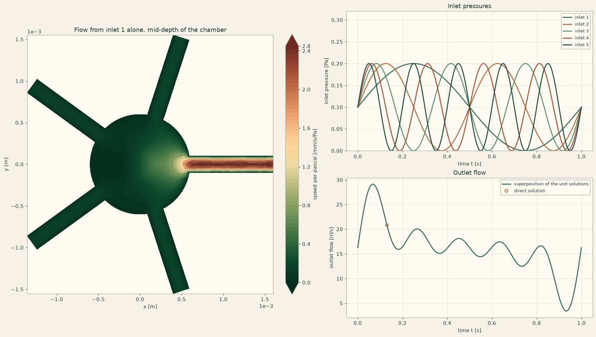
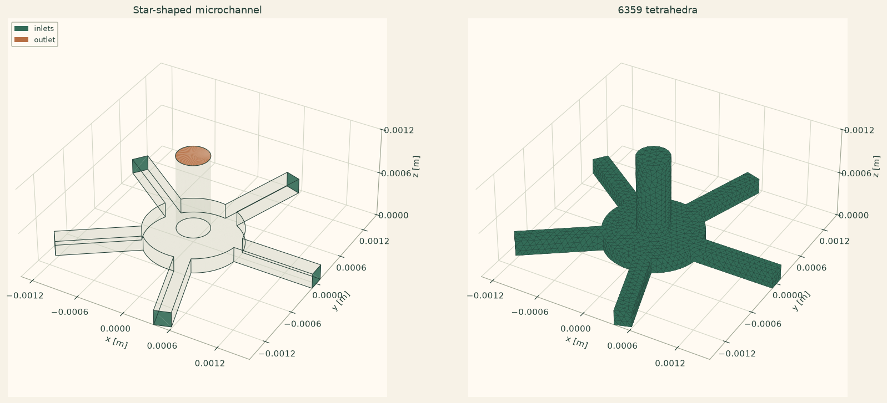

Docs › Examples › Star-shaped microchannel driven by five pulsating inlets
Microfluidics · 3D
Star-shaped microchannel driven by five pulsating inlets
A flat chamber fed by five inlet channels with sinusoidal pressures of five different frequencies, drained by one outlet tube.
Run locally with OneSimulation. The example downloads are free. Running them requires an activated runtime. Runtime Alpha 0.2.1a7 · CPython 3.13 on macOS (Apple Silicon), Ubuntu 22.04 (x86-64), and Windows x64. Installation and activation · View pilot plans. Scope of the reference checks.

What it computes
The microchannel is read from a STEP file with named inlets and outlet and meshed with tetrahedra. OneSimulation solves the 3D creeping flow with Taylor-Hood elements for a unit pressure at each inlet and superposes the five solutions to the outlet flow over a whole second; a direct solve with all five pressures checks the superposition. The script that builds the STEP file comes with the notebook.
What it checks
Inflow and outflow balance to 2e-15; the direct solution and the superposition agree within 0.1 % in the outlet flow and 1.2e-3 of the largest speed at four probes (residual inertia at Re = 0.1); the five unit responses agree within 5 % (mesh asymmetry), and the outlet conductance is 0.84 of the hydraulic-network estimate.
Geometry
The notebook starts at the import of the CAD file star_microchannel_superposition.step: STEP (AP242), readable by any CAD program, with the names of the faces that the boundary conditions use. Put it next to the notebook.

The geometry script
The script star_microchannel_superposition_geometry.py builds the geometry with the CAD objects of OneSimulation and writes the file. Change a dimension there, run it, and run the notebook again.
"""Geometry of the OneSimulation example "Star-shaped microchannel driven by five pulsating inlets".
Builds the microchannel with the CAD objects of OneSimulation: a flat round chamber of radius
0.6 mm and depth 0.2 mm, five straight inlet channels of 0.2 mm x 0.2 mm cross-section reaching
out to a radius of 1.6 mm at 72 degree spacing, and an outlet tube of radius 0.2 mm that rises
1 mm from the centre of the chamber. The part is written to star_microchannel_superposition.step
with the face groups inlet_1 to inlet_5 (the channel ends, counter-clockwise from the x axis) and
outlet (the top of the tube).
"""
import numpy as np
from onesim.cad.d3 import Box, Cylinder, UnionFromObjects
mm = 1e-3
depth, reach = 0.2 * mm, 1.6 * mm
parts = [
Cylinder(radius=0.6 * mm, length=depth),
Cylinder(radius=0.2 * mm, length=1.0 * mm, origin=(0.0, 0.0, depth)),
]
parts += [
Box(
length=reach - 0.4 * mm,
width=0.2 * mm,
height=depth,
origin=(0.4 * mm, -0.1 * mm, 0.0),
).rotated((0, 0, 1), np.radians(72 * k))
for k in range(5)
]
star = UnionFromObjects(objects=parts)
end_of = lambda k: (
lambda face: abs(face.center[0] - reach * np.cos(np.radians(72 * k))) < 1e-9
and abs(face.center[1] - reach * np.sin(np.radians(72 * k))) < 1e-9
)
star = star.grouped(
outlet=star.select(
faces=lambda face: abs(face.center[2] - depth - 1.0 * mm) < 1e-9
),
**{f"inlet_{k + 1}": star.select(faces=end_of(k)) for k in range(5)},
)
star.save("star_microchannel_superposition.step")The notebook
The complete notebook, cell by cell. Run it to produce the figures and the comparison printout.
Microfluidic chips infuse and flush a device through several inlets whose pressures are controlled independently. Here five inlet channels, 0.2 mm square in cross-section, meet in a flat round chamber of radius 0.6 mm; an outlet tube of radius 0.2 mm rises from its centre. The pressure at inlet \(i\) varies as
At these scales the flow is creeping: the Reynolds number stays below 0.05, and the Womersley number \(\alpha=a\sqrt{2\pi f/\nu}\) of the channels is about 0.6 even at 5 Hz, so the flow follows the pressures without delay. The Stokes equations are linear, so the flow for any set of inlet pressures is \(\mathbf u=\sum_i p_i(t)\,\mathbf u_i\), where \(\mathbf u_i\) is the flow for a unit pressure at inlet \(i\) alone. Five steady solutions therefore give the whole history.
The microchannel comes from the CAD file star_microchannel_superposition.step, written by star_microchannel_superposition_geometry.py, with the faces inlet_1 to inlet_5 and outlet.
| face | condition | |---|---| | inlet_i | pressure \(p_i\) (normal traction) | | outlet | pressure 0 | | all walls | no slip |
Reference. Exact: the direct solution for a set of inlet pressures equals the superposition; the five unit responses are equal by symmetry; inflow equals outflow. Estimate: a hydraulic network of five square ducts (\(R_a=28.4\,\mu L/w^4\), F. M. White, Viscous Fluid Flow, 3rd ed., section 3-3) in parallel with the outlet tube (\(R_o=8\mu L_o/(\pi r^4)\), Hagen-Poiseuille) in series, neglecting the chamber and the junction losses.
import numpy as np
from onesim.cad.d2 import Plane
from onesim.cad.exchange import load
from onesim.materials import NewtonianFluid
from onesim.meshing import TetrahedralMesher
from onesim.numerics import Numerics
from onesim.numerics.fem import FiniteElement, TaylorHood
from onesim.numerics.linear import SparseDirect
from onesim.numerics.nonlinear import Newton
from onesim.physics.hydrodynamics import (
IncompressibleNavierStokes,
NoSlipWall,
PressureTraction,
)
from onesim.simulation import Problem, Simulation
from onesim.visualization import plots, theme
theme.set()Geometry and mesh
mm = 1e-3
star = load("star_microchannel_superposition.step")
faces = star.boundaries
inlets = [faces[f"inlet_{k}"] for k in range(1, 6)]
walls = (
faces.all - faces.outlet - inlets[0] - inlets[1] - inlets[2] - inlets[3] - inlets[4]
)
mesh = TetrahedralMesher(target_size=0.07 * mm).generate(star)
view = plots.Camera(elevation=35, azimuth=-60)
fig = plots.figure(1, 2, size=(15, 6.5))
plots.geometry(
star,
selection={
"inlets": inlets[0] | inlets[1] | inlets[2] | inlets[3] | inlets[4],
"outlet": faces.outlet,
},
labels=False,
camera=view,
title="Star-shaped microchannel",
ax=fig[0],
)
plots.mesh(
mesh,
groups=("all",),
legend=False,
camera=view,
title=f"{mesh.cell_count} tetrahedra",
ax=fig[1],
)
plots.show()Model
One problem per set of inlet pressures: the five unit cases and, as a check, the pressures at \(t=0.13\) s, all solved on the same mesh.
water = NewtonianFluid(density=1000.0, dynamic_viscosity=1.0e-3)
flow = IncompressibleNavierStokes(domain=star.volume, material=water)
pressure_at = lambda t: 0.1 * (1 + np.sin(2 * np.pi * np.arange(1, 6) * t))
cases = {
**{f"unit {k + 1}": np.eye(5)[k] for k in range(5)},
"direct, t = 0.13 s": pressure_at(0.13),
}
numerics = Numerics(
spatial=FiniteElement(element=TaylorHood()),
initial_guess={flow.velocity: (0.0, 0.0, 0.0)},
nonlinear_solver=Newton(
linear_solver=SparseDirect(), absolute_tolerance=1e-20, relative_tolerance=1e-10
),
)
velocities = {
name: Simulation(
problem=Problem(
name="Star microchannel",
geometry=star,
physics=(flow,),
boundary_conditions=(
*[
PressureTraction(boundary=inlet, physics=flow, value=float(value))
for inlet, value in zip(inlets, pressures)
],
PressureTraction(boundary=faces.outlet, physics=flow, value=0.0),
NoSlipWall(boundary=walls, physics=flow),
),
),
mesh=mesh,
numerics=numerics,
)
.solve_stationary()
.field(flow.velocity)
for name, pressures in cases.items()
}Results
The flow rate through a face is the integral of the normal velocity. The superposition of the unit solutions with the pressures at \(t=0.13\) s is compared with the direct solution at a set of points and in the outlet flow rate.
rate = lambda velocity, face: velocity.integrate(
boundary=face, normal_component=True
).value
conductance = np.array(
[rate(velocities[f"unit {k}"], faces.outlet) for k in range(1, 6)]
)
balance = [
sum(rate(velocities[f"unit {k}"], face) for face in (*inlets, faces.outlet))
/ conductance[k - 1]
for k in range(1, 6)
]
probes = np.array(
[
[0.0, 0.0, 0.1 * mm],
[0.3 * mm, 0.1 * mm, 0.1 * mm],
[0.0, 0.0, 0.7 * mm],
[0.9 * mm, 0.0, 0.1 * mm],
]
)
pressures = cases["direct, t = 0.13 s"]
superposed = sum(
p * velocities[f"unit {k + 1}"].evaluate(probes) for k, p in enumerate(pressures)
)
direct = velocities["direct, t = 0.13 s"].evaluate(probes)
arm = 28.4 * water.dynamic_viscosity * 1.0 * mm / (0.2 * mm) ** 4
tube = 8 * water.dynamic_viscosity * 1.0 * mm / (np.pi * (0.2 * mm) ** 4)
network = 1 / (arm + 5 * tube)
print(
"outlet flow per pascal at one inlet [nl/s/Pa]: "
+ ", ".join(f"{1e12 * value:.4f}" for value in conductance)
)
print(
f"spread over the five inlets (symmetry): {np.ptp(conductance) / conductance.mean():.1e}"
)
print(
f"mass balance, inflow + outflow relative to the flow: largest {max(abs(b) for b in balance):.1e}"
)
print(
f"hydraulic network estimate 1 / (R_a + 5 R_o): {1e12 * network:.4f} nl/s/Pa (simulation / estimate {conductance.mean() / network:.3f})"
)
print(
f"\nt = 0.13 s, inlet pressures " + ", ".join(f"{p:.4f}" for p in pressures) + " Pa"
)
print(
f"outlet flow: direct {1e12 * rate(velocities['direct, t = 0.13 s'], faces.outlet):.5f} nl/s, "
f"superposed {1e12 * conductance @ pressures:.5f} nl/s"
)
print(
f"velocity at four probes, largest difference direct - superposed: {np.abs(direct - superposed).max() / np.abs(direct).max():.1e} of the largest speed"
)
print(
f"largest Reynolds number in the outlet tube: {water.density * 2 * conductance.sum() * 0.2 / (np.pi * 0.2 * mm * water.dynamic_viscosity):.3f}"
)Figure
The flow for a pressure at inlet 1 alone at mid-depth of the chamber, and the history of the inlet pressures and the outlet flow over one second.
t = np.linspace(0.0, 1.0, 1001)
history = np.array([pressure_at(time) for time in t])
fig = plots.figure(layout=[["field", "pressures"], ["field", "outflow"]], size=(16, 9))
plots.section(
velocities["unit 1"],
plane=Plane(origin=(0, 0, 0.1 * mm), normal=(0, 0, 1)),
component=lambda u, position: 1e3 * np.linalg.norm(u, axis=1),
limits="robust",
contours=6,
subdivisions=2,
label="speed per pascal [mm/s/Pa]",
aspect=1.0,
title="Flow from inlet 1 alone, mid-depth of the chamber",
ax=fig["field"],
)
plots.line(
t,
{f"inlet {k + 1}": history[:, k] for k in range(5)},
ylimits=(0.0, 0.32),
xlabel="time t [s]",
ylabel="inlet pressure [Pa]",
title="Inlet pressures",
legend="upper right",
ax=fig["pressures"],
)
plots.line(
t,
{"superposition of the unit solutions": 1e12 * history @ conductance},
points={
"direct solution": (
[0.13],
[1e12 * rate(velocities["direct, t = 0.13 s"], faces.outlet)],
)
},
xlabel="time t [s]",
ylabel="outlet flow [nl/s]",
title="Outlet flow",
legend="upper right",
ax=fig["outflow"],
)
plots.show()Going further
Give the inlets different widths in star_microchannel_superposition_geometry.py and write the STEP file again: the five unit responses then differ, and the same superposition still gives the outlet flow for any control signal. At higher flow rates inertia breaks the linearity; a transient run with Simulation.run and the time-dependent pressures shows where.